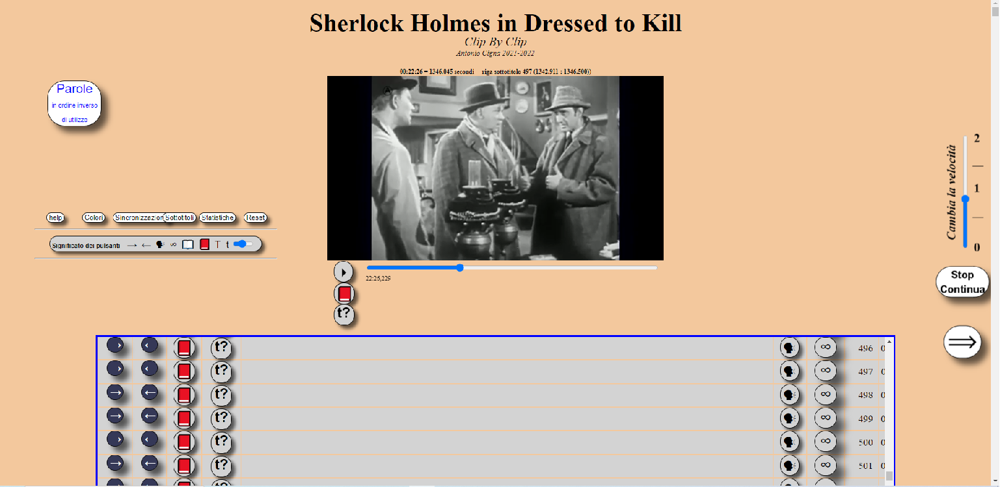
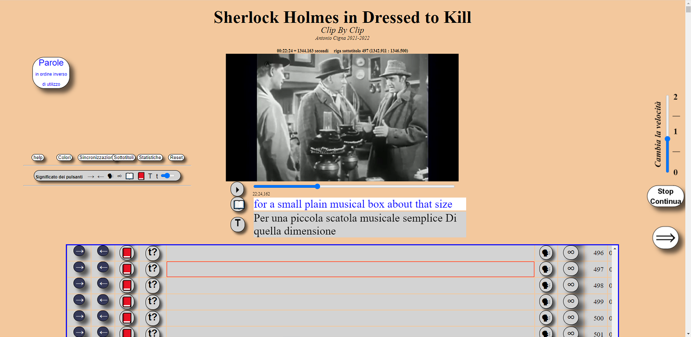
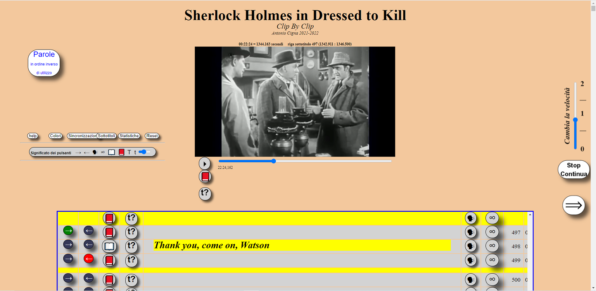
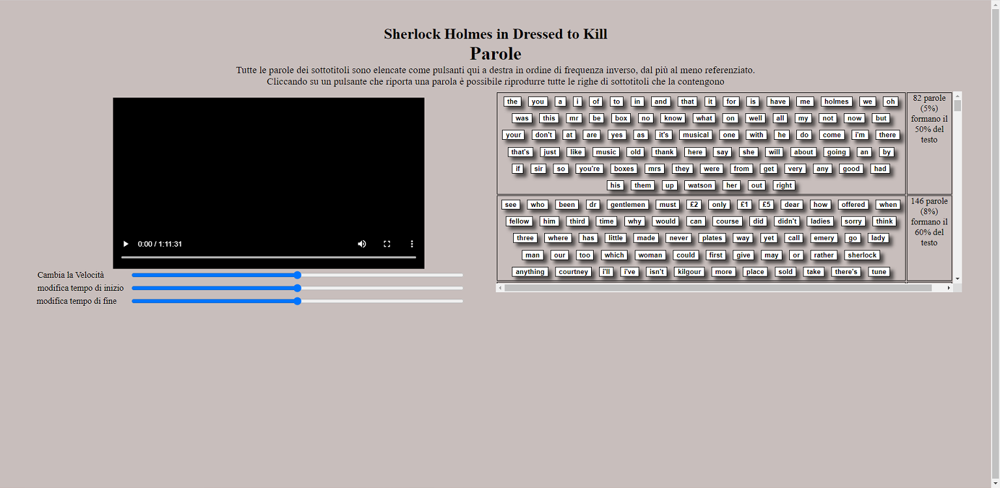
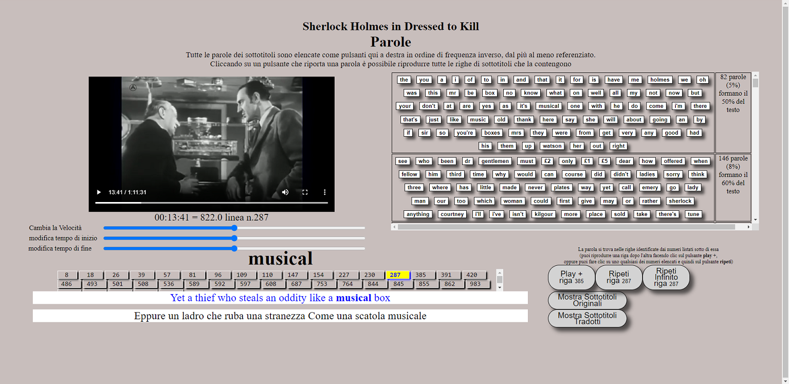

ClipByClip is a tool to practice the comprehension of a language.
It can be used in active mode by listening, reading, repeating
or in passive mode by endlessly listening to a few lines of subtitles while busy doing something else.
It can also be useful in your native language to memorize for instance a poem, a piece of prose or a list of terms.
|  |
It's suggested to
| |
|  |
To watch the film without interruptions click on the button with the little arrow inside a circle which is just below the video.
To read the subtitles in the original language, click on the book close icon, and on the open book to hide them. To read the translated subtitles, click on the t? icon and to hide them click on the T icon. |
|

|
zzz To select some lines of subtitles to play
click on the §arrowRight§ icon of the first line and the §arrowLeft§ of the last line.
Two highlighted stripes will appear before the first line and after the last. The buttons on the new line before the first have effect on all the selected lines (eg. clicking on the §talkingHead§ playbacks all the selected lines). xx The line being played is surrounded by a red border that is visible even when the subtitle is hidden. |
|
|  |
zz You can show, hide and play a single line inside a selected group |
|
|  |
This page is called by the Words in reverse order of use button. Each button on the right get all rows containing the word displaied. The most used (those which appear in more rows) are listed first, the least are last, so that you can practice firstly the most useful. |
|
|  |
zz words 6 |